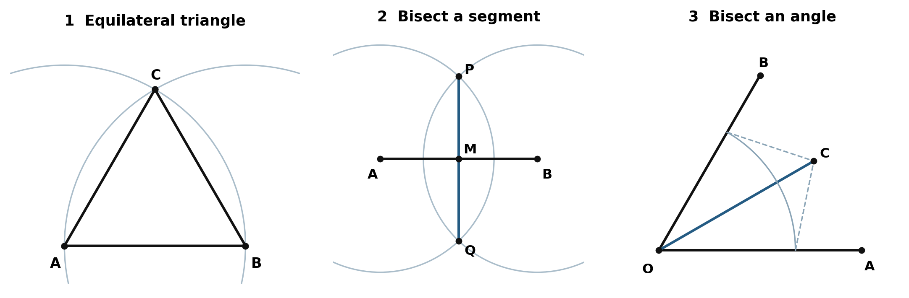
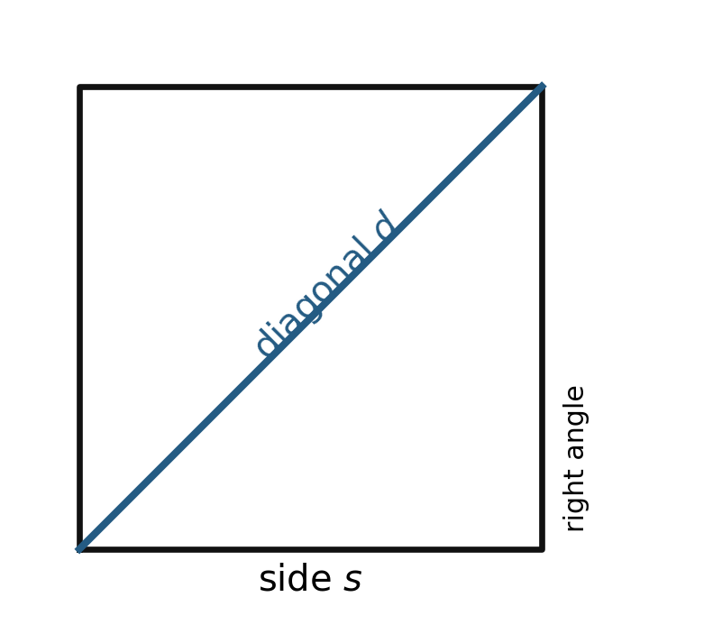
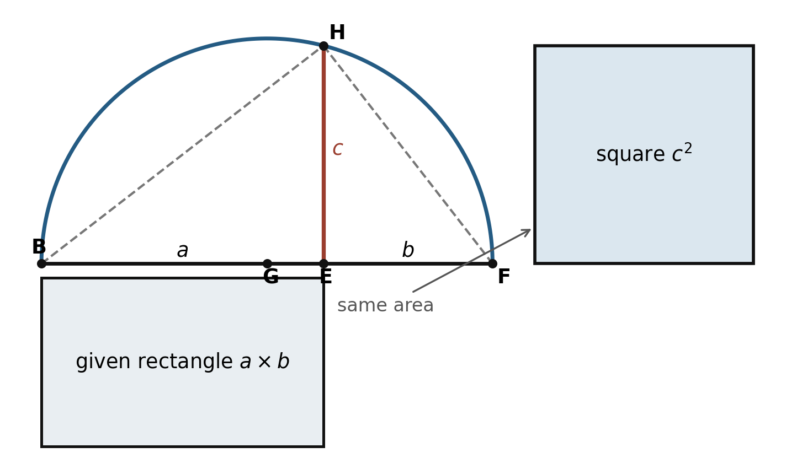
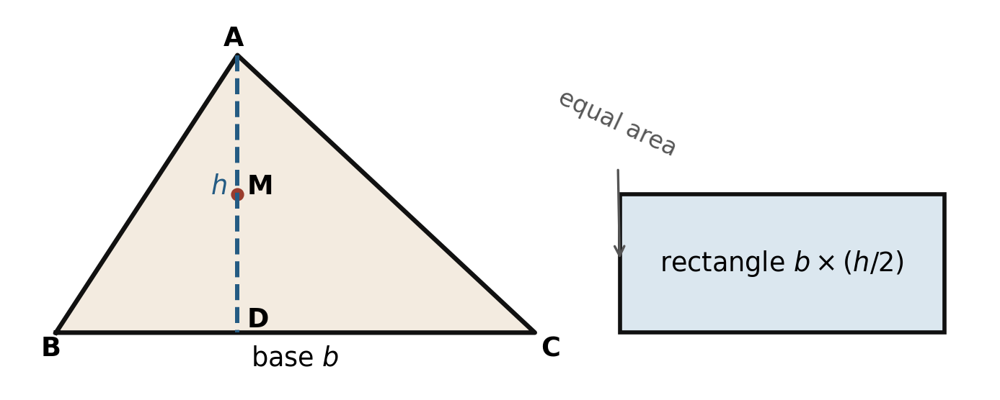
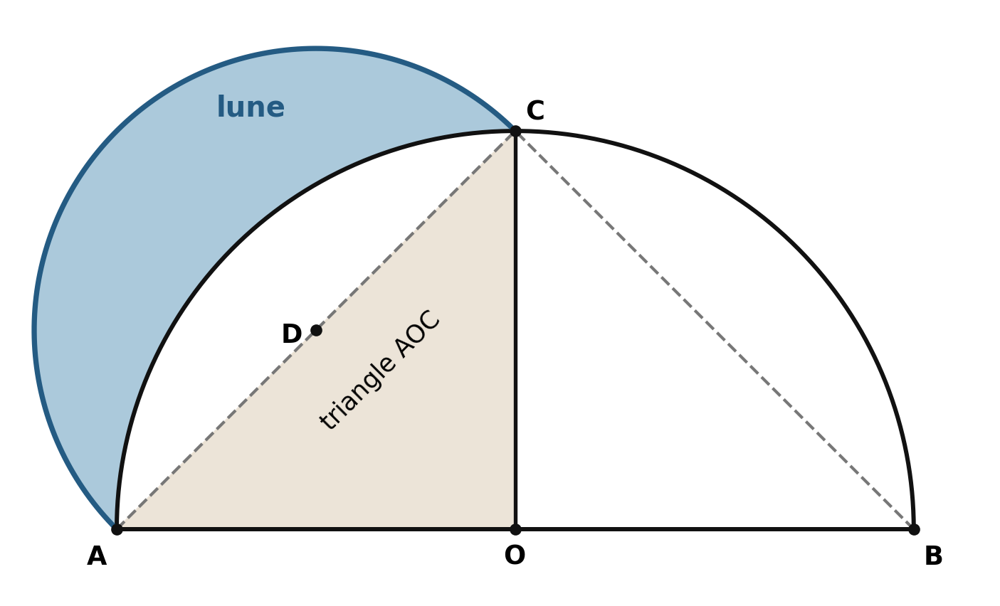
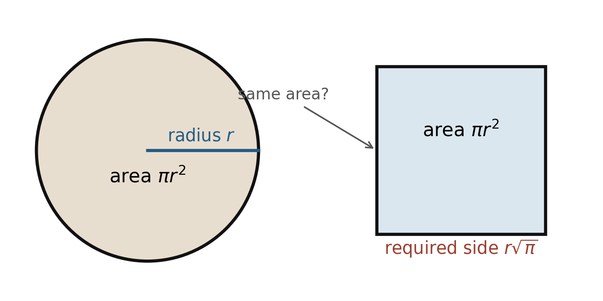

What happens when whole numbers and their ratios no longer seem sufficient to describe geometry? The discovery of incommensurable magnitudes did not make geometry fail. Instead, geometry became a language in which Greek mathematicians could construct, compare, and prove relationships among magnitudes without first turning every length into a number.
We shall follow a sequence of increasingly ambitious constructions: first a few elementary problems, then the quadrature of a rectangle and a triangle, and finally Hippocrates of Chios’s quadrature of a lune. A modern epilogue explains why the much more famous quadrature of the circle is impossible under the classical rules.
The Rules of the Game: Straightedge and Compass
The geometric constructions in this lesson use only two idealized instruments: an unmarked straightedge and a compass. The straightedge draws the line through two already known points; it has no scale and does not measure. The compass draws a circle with a chosen center through a chosen point. New points arise where constructed lines and circles intersect. A classical construction consists of finitely many such exact operations.

-
Construct an equilateral triangle on a segment
Given segment \(AB\), draw a circle centered at \(A\) through \(B\), and a circle centered at \(B\) through \(A\). Let one intersection be \(C\), and join \(AC\) and \(BC\). Since \(AC\) and \(AB\) are radii of the first circle, \(AC=AB\). Since \(BC\) and \(BA\) are radii of the second, \(BC=BA\). Therefore \(AB=AC=BC\).
-
Divide a segment in half
Draw circles centered at \(A\) and \(B\) with the same radius, chosen larger than half of \(AB\). Let their intersections be \(P\) and \(Q\), and draw line \(PQ\). It meets \(AB\) at \(M\). Triangles \(APQ\) and \(BPQ\) are congruent by SSS, so \(\angle APM=\angle BPM\). Triangles \(APM\) and \(BPM\) are then congruent by SAS. Hence \(AM=MB\). Their equal supplementary angles at \(M\) are right angles, so the same construction also produces the perpendicular bisector of \(AB\).
-
Bisect an angle
Draw a circle centered at \(O\) meeting the rays of \(\angle AOB\) at \(A\) and \(B\). Draw equal-radius arcs centered at \(A\) and \(B\), meeting at \(C\) inside the angle, and join \(OC\). We have \(OA=OB\), \(AC=BC\), and \(OC\) is common. Thus triangles \(AOC\) and \(BOC\) are congruent by SSS, so \(\angle AOC=\angle COB\).
These constructions supply moves that will be used repeatedly: finding a midpoint, erecting a perpendicular, creating equal lengths, and dividing an angle into equal parts. The later quadratures are built by combining such certified steps.
From Number to Shape
Earlier mathematical cultures measured fields, computed volumes, solved numerical problems, and developed effective procedures. Greek mathematics did not invent reasoning. What changes in the Greek tradition is the increasingly explicit insistence that a mathematical claim should follow from previously accepted claims by a chain of proof.
The phrase pre-Euclidean needs care. Euclid wrote the Elements around 300 BCE, but most earlier mathematical works have been lost. Much of what we say about the sixth and fifth centuries BCE comes through later writers. We can often identify an idea as older than Euclid; we cannot always reconstruct its first proof or name its discoverer with confidence.
If a length cannot be expressed as a ratio of whole numbers, the length does not disappear. It remains visible, constructible, and comparable. Geometry can carry information that the available arithmetic cannot. In shape we trust.
Commensurable and Incommensurable Magnitudes
Suppose two segments \(AB\) and \(CD\) possess a common measure \(EF\). This means that \(AB\) consists of some whole number \(p\) of copies of \(EF\), while \(CD\) consists of some whole number \(q\) of copies. Their ratio is therefore \(p:q\), or in modern notation, \(AB/CD=p/q\). Such segments are commensurable: they can be measured by the same unit.
The diagonal and side of a square provide the decisive counterexample. Let the side have length \(s\) and the diagonal length \(d\). The Pythagorean theorem gives \[ d^2=2s^2. \] If \(d\) and \(s\) were commensurable, their ratio could be written as \(p/q\) in lowest terms.

Proof by contradiction
- Assume \(d/s=p/q\), where \(p\) and \(q\) are whole numbers with no common factor.
- Squaring gives \(p^2=2q^2\). Therefore \(p^2\) is even, and so \(p\) is even.
- Write \(p=2r\). Substitution gives \(4r^2=2q^2\), so \(q^2=2r^2\). Thus \(q\) is also even.
- Both \(p\) and \(q\) are even, contradicting the claim that \(p/q\) was in lowest terms.
Therefore no pair of whole numbers \(p\) and \(q\) expresses \(d/s\). The diagonal and side have no common measure. This is reductio ad absurdum: an assumption is shown to force an impossibility.
The Hippasus story
A later tradition connects the discovery of incommensurability with Hippasus of Metapontum, a member of the Pythagorean community. The most dramatic version says that he revealed the forbidden discovery and was drowned at sea. It is memorable, but it is not documented biography. Ancient reports conflict, and some associate the drowning story with revealing the construction of a dodecahedron rather than with the diagonal of a square. The legend does show that later writers regarded incommensurability as a profound disruption of the Pythagorean identification of number—especially whole-number ratio—with the structure of the world.
Quadrature: The Problem of Making a Square
Quadrature, or squaring, asks us to construct a square having exactly the same area as a given figure using only an unmarked straightedge and compass. The goal is not to estimate the area, measure it in decimal units, or merely write down a formula. The goal is to produce the square itself.
The constructions form a ladder. First square a rectangle. Then turn a triangle into an equal-area rectangle and square that rectangle. Finally, prove that a particular lune has the same area as a triangle and use the triangle construction. Each new problem is reduced to one already solved.
Squaring a Rectangle
Given a rectangle with side lengths \(a\) and \(b\), we seek a segment \(c\) such that the square on \(c\) has the same area as the rectangle. In modern algebraic language, we want \(c^2=ab\). The length \(c\) is the geometric mean of \(a\) and \(b\).
Construction
- On one straight line place segments \(BE=a\) and \(EF=b\), so \(BF=a+b\).
- Find \(G\), the midpoint of \(BF\).
- Draw the semicircle with center \(G\) and diameter \(BF\).
- At \(E\), erect a perpendicular to \(BF\). Let it meet the semicircle at \(H\).
- Construct a square whose side is \(EH\). Call \(EH=c\).

Proof
Because \(BF\) is a diameter, \(\angle BHF\) is a right angle. Segment \(HE\) is the altitude from the right angle to the hypotenuse \(BF\). The smaller right triangles \(BHE\) and \(EHF\) are similar. Corresponding sides give \[ \frac{BE}{EH}=\frac{EH}{EF}. \] Hence \(EH^2=BE\cdot EF\). Since \(BE=a\), \(EF=b\), and \(EH=c\), we obtain \(c^2=ab\). The square on \(EH\) therefore has the same area as the original rectangle.
Squaring a Triangle
Take triangle \(ABC\). Choose \(BC\) as the base and drop the perpendicular altitude \(AD\). Let \(M\) be the midpoint of \(AD\). Construct a rectangle with base \(BC\) and height \(AM\), which is half the altitude.

Proof
A parallelogram with base \(BC\) and full height \(AD\) is divided by a diagonal into two equal triangles. Thus triangle \(ABC\) has half the area of that parallelogram. A rectangle with base \(BC\) and half the height \(AD\) also has half the area. In modern notation, both areas equal \[ \frac{bh}{2}=b\left(\frac{h}{2}\right). \] The triangle has therefore been replaced by an equal-area rectangle. Applying the preceding construction produces a square equal in area to triangle \(ABC\).
Hippocrates’ Quadrature of a Lune
Once rectangles and triangles can be squared, any polygon can in principle be cut into triangles and reduced to a square. Curved figures are another matter. The work of Hippocrates of Chios, active in the fifth century BCE, is striking because he squared a particular lune: a crescent bounded by two circular arcs.
His reasoning requires three ingredients:
- An angle inscribed in a semicircle is a right angle.
- The Pythagorean theorem.
- The areas of circles or semicircles are proportional to the squares of their diameters.
Construction
- Draw a semicircle with diameter \(AB\) and midpoint \(O\).
- At \(O\), erect a perpendicular meeting the semicircle at \(C\). Join \(AC\) and \(BC\).
- Using \(AC\) as a diameter, draw a semicircle outward from triangle \(AOC\). The crescent between this semicircle and arc \(AC\) of the original circle is the lune.

Proof
- \(\angle ACB\) is right because it is inscribed in a semicircle.
- Triangles \(AOC\) and \(BOC\) are congruent, so \(AC=BC\).
- By the Pythagorean theorem, \(AB^2=AC^2+BC^2=2AC^2\).
- Areas of semicircles are proportional to the squares of their diameters. Therefore the semicircle on \(AC\) has half the area of the semicircle on \(AB\).
- Quadrant \(AOC\) also has half the area of the semicircle on \(AB\). Hence the semicircle on \(AC\) and quadrant \(AOC\) have equal areas.
- These equal figures contain the same circular segment between chord \(AC\) and arc \(AC\). Subtract that shared segment from each.
- What remains from the semicircle on \(AC\) is the lune. What remains from quadrant \(AOC\) is triangle \(AOC\). Therefore the lune and triangle \(AOC\) have equal areas.
The triangle can be squared by the preceding construction. Consequently, the lune can be squared as well.
What has—and has not—been proved
Hippocrates did not square every lune, and he did not square the circle. He squared one carefully constructed lune by showing that it was equal in area to a triangle. The proof works through comparison, proportion, decomposition, and subtraction rather than through a numerical formula for the lune’s area.
Modern Epilogue: The Quadrature of the Circle
The ancient problem asks us to construct, for a given circle, a square having exactly the same area. A highly accurate approximation is not enough: the construction must terminate after finitely many permitted straightedge-and-compass steps and produce exact equality.
Suppose the circle has radius \(r\), and the desired square has side \(x\). Equality of areas requires \[ x^2=\pi r^2, \] and therefore \(x=r\sqrt{\pi}\). Once the radius is chosen as the unit length, squaring the circle is equivalent to constructing the length \(\sqrt{\pi}\).

Algebraic and transcendental numbers
A number is algebraic if it satisfies some nonzero polynomial equation with integer coefficients. Equivalently, rational coefficients may be used because denominators can be cleared.
For example, \(1/2\) is algebraic because it satisfies \(2x-1=0\); \(\sqrt2\) is algebraic because it satisfies \(x^2-2=0\); and \(\sqrt[3]{2}\) is algebraic because it satisfies \(x^3-2=0\).
A number is transcendental if it is not algebraic: it satisfies no nonzero polynomial equation with integer or rational coefficients.
Every transcendental number is irrational, but not every irrational number is transcendental. The number \(\sqrt2\) is irrational yet algebraic. The numbers \(\pi\) and \(e\) are transcendental.
What straightedge and compass can construct
A straight line through two known points requires only linear equations. Intersections involving a circle require quadratic equations. Beginning with a unit segment, each new construction can therefore enlarge the available number system only through ordinary arithmetic and the extraction of square roots. Every constructible length is algebraic over the rational numbers; more precisely, its algebraic degree must be a power of two.
Algebraicity alone is not enough. For example, \(\sqrt[3]{2}\) is algebraic, but its algebraic degree is three rather than a power of two, so it is not constructible by the classical tools. More precisely, a constructible number must lie in a succession of quadratic extensions; having degree equal to a power of two is a necessary consequence, but is not by itself sufficient in every case.
Why the construction is impossible
- If the circle could be squared, then \(\sqrt\pi\) would be a constructible length.
- Every straightedge-and-compass constructible length is algebraic.
- Ferdinand von Lindemann proved in 1882 that \(\pi\) is transcendental.
- Therefore \(\sqrt\pi\) is transcendental as well: if \(\sqrt\pi\) were algebraic, then its square \(\pi\) would also be algebraic.
- Thus \(\sqrt\pi\) is not constructible. The required square cannot be constructed with an unmarked straightedge and compass in finitely many exact steps.
This argument rests on two deep nineteenth-century results: the algebraic characterization of constructible lengths, developed from work such as Pierre Wantzel’s in 1837, and Lindemann’s proof that \(\pi\) is transcendental. Proving Lindemann’s theorem is far beyond the scope of this lesson; here it is the decisive theorem invoked.
The conclusion concerns the classical rules only. The equal-area square can be approximated as accurately as desired, and exact constructions become possible if other curves or instruments are permitted. Neither changes the answer to the original straightedge-and-compass problem.
Afterthoughts
- Why might the discovery of incommensurable magnitudes encourage a preference for geometry over arithmetic?
- Follow the chain rectangle → triangle → lune. What earlier result is reused at each reduction, and where do similarity, the Pythagorean theorem, and subtraction of equal areas enter?
- Why does squaring one particular lune not square the circle, and which premise in the lune argument seems historically or logically the most demanding?
- Where, precisely, does the impossibility of squaring the circle enter: in the area equation, in the rules of construction, or in the nature of \(\pi\)?
Sources and Further Reading
Recommended student reading
- Jay Cummings, Math History: A Long-Form Mathematics Textbook.
- William Dunham, Journey Through Genius: The Great Theorems of Mathematics, Chapter 1.
- Euclid, Elements, Book I, Propositions 1, 9, and 10; Book II, Proposition 14; Book XII, Proposition 2.
- J. J. O’Connor and E. F. Robertson, “Hippocrates of Chios”, MacTutor History of Mathematics Archive.
Historical primary sources
The following articles are included as historical sources. They are advanced works in French and German and are not expected student reading.
- Pierre-Laurent Wantzel, “Recherches sur les moyens de reconnaître si un problème de géométrie peut se résoudre avec la règle et le compas”, Journal de Mathématiques Pures et Appliquées, series 1, vol. 2 (1837), pp. 366–372. [In French.]
- Ferdinand Lindemann, “Ueber die Zahl π”, Mathematische Annalen, vol. 20 (1882), pp. 213–225. [In German.]